Polaric 1.3.0 — User Guide
Polaric turns the top of your screen into a living notch: music with synced lyrics, your meetings, messages and email at a glance, tasks, timers, ambient sound, ShareZone (send files to a phone), Text capture (copy text from anything on screen), Screenshots, Privacy & Network, window snapping, AutoText and a small mascot that keeps you company. It shows your camera and microphone during calls, tells you when an AI finishes a task (Claude Code, Codex, Antigravity, Claude AI, ChatGPT, Gemini), and speaks English or Bahasa Indonesia. On Windows it also shows your game's FPS and a small idle clock. It runs on macOS 14 or later on a Mac with Apple silicon (MacBook with or without a notch) and on Windows 10 and 11 (64-bit).
🇮🇩 Versi Bahasa Indonesia: Bahasa Indonesia
Contents
- Install or update
- Set up Polaric so every feature works
- Opening the notch
- Music and lyrics
- Pages in the notch
- Email and chat notifications
- Meetings and Calendar
- Timer and To-do
- Ambient sounds
- System alerts
- Window Snap
- AutoText
- ShareZone: send files to a phone
- Text capture: copy text from the screen
- Screenshots: save any part of the screen
- Privacy & Network
- Game Awareness (Windows)
- Meeting Awareness
- Idle clock (Windows)
- Your look: themes, Aura Glow and mascots
- Browser-Aware Mode and Adaptive Notch
- Settings, backup, privacy and About
- Polaric for Windows
- AI task alerts — new
- Language and help in Settings — new
- Troubleshooting
- What's new in 1.3.0
1. Install or update
Download Polaric only from the official website, polaricdev.github.io. Copies from anywhere else may have been changed.
Mac
- Open
Polaric-Notch.dmgand drag Polaric into Applications. - Open Polaric from Applications. The first time, macOS may say it can't check the developer: right-click Polaric › Open, or go to System Settings › Privacy & Security and click Open Anyway.
Windows
- Run
Polaric-Setup.exe. If SmartScreen appears, click More info › Run anyway. - If Polaric is already installed, the setup updates it in place: same folder, your data and choices kept, and Polaric starts again by itself. No uninstall needed.
Updates are automatic. Polaric checks for a new version 30 seconds after it starts, every 6 hours and when the internet comes back. A new version is downloaded, its signature is checked, and the notch counts down 20 seconds before Polaric installs it and restarts. Your settings and data stay.
After an update, the notch says Updated to Polaric 1.3.0 once. The full list of changes is in Settings › About › What's new.
2. Set up Polaric so every feature works
Polaric needs a few permissions from macOS or Windows, and your apps must be allowed to show notifications. Do this once, right after installing. It takes about five minutes.
2.1 On a Mac
Open System Settings › Privacy & Security and go through these, top to bottom:
- Accessibility → switch Polaric on. Needed for AutoText, Window Snap, the ⌥O (Text capture) and ⌥⇧S (Screenshots) shortcuts, email and chat notices, WhatsApp names and replacing the volume and brightness popup. If a feature stops working after an update: select Polaric, remove it with −, open Polaric again and switch it back on.
- Screen Recording (macOS 15 and later: Screen & System Audio Recording) → switch Polaric on. Needed for Text capture and Screenshots, to see the pixels under the box. macOS asks the first time you press ⌥O or ⌥⇧S; quit and reopen Polaric after allowing it.
- Calendars → set Polaric to Full Access. Needed for meetings from the Calendar app. To see Google meetings, add your Google account in System Settings › Internet Accounts and turn Calendars on.
- Automation → under Polaric, switch on Google Chrome (and Safari if you use it). macOS asks the first time something plays in a browser. Polaric uses it to show the right logo (YouTube, Netflix, Spotify…) and to open meeting links and chats.
- Local Network → switch Polaric on. Needed for ShareZone to reach your Android phone on your Wi-Fi.
- Bluetooth → switch Polaric on. Needed to show your earbuds' name and battery, and the Bluetooth row on the Privacy & Network page.
- Location Services (optional) → switch Polaric on only if you want the Wi-Fi name shown. macOS only tells apps the Wi-Fi name this way; Polaric never uses your location.
Then, still in System Settings:
- Notifications → for Google Chrome, WhatsApp, Telegram, Slack, Microsoft Outlook and the other chat apps you use: Allow notifications on and the alert style set to Temporary or Persistent (not None). Polaric reads these banners to show email and chat notices, then hides the macOS banner so you don't see it twice. Keep Focus / Do Not Disturb off when you want notices: macOS shows no banners during a Focus. (WhatsApp still shows, from its Dock badge.)
- General › Login Items → make sure Polaric is allowed, so it starts when you log in (turn it on in Polaric › Settings › General › Start Polaric when you log in).
In Google Chrome (for Gmail, Outlook on the web and WhatsApp Web):
- Open each site, click the icon left of the address › Site settings › Notifications: Allow.
- Gmail: ⚙︎ › See all settings › Desktop notifications › New mail notifications on. Outlook on the web: ⚙︎ › General › Notifications › Desktop notifications on. WhatsApp Web: ⋮ › Settings › Notifications › on.
2.2 On Windows
- SmartScreen: the first time, click More info › Run anyway. Polaric is signed by its maker, but it is not a paid certificate yet.
- Windows Firewall: when it asks about Polaric, tick Private networks and click Allow. Needed for ShareZone's iPhone code.
- Settings › System › Notifications → Notifications on, and on for Google Chrome, WhatsApp, Telegram, Slack, Microsoft Outlook and the other chat apps you use. Polaric reads Windows' own notification list, so this works even when Do not disturb is on.
- Chrome site notifications and Gmail / Outlook / WhatsApp Web settings: the same as steps 10 and 11 above.
- Start with Windows: chosen in the installer; you can change it any time in Polaric › Settings › General › Start Polaric when you sign in.
- Text capture: Windows reads text in the languages installed in Settings › Time & language › Language & region. English works out of the box; add another language there to read it too.
- Calendar: Windows has no system calendar for Polaric to read, so paste your calendar's public iCal link in Polaric › Settings › Calendar (see Meetings and Calendar).
- Game FPS (optional): Windows only lets apps read another program's frames with permission. In Polaric › Settings › Gaming & Meetings, click Allow FPS reading…, accept the administrator prompt, then sign out and back in. Without it, games still show in the notch with FPS -- (see Game Awareness).
- Camera and microphone in Windows privacy settings: Meeting Awareness and Privacy & Network read Windows' own privacy record. Leave Settings › Privacy & security › Camera / Microphone / Location as they are; Polaric only reads which app last used each one.
AutoText and Window Snap can't reach apps that run as administrator unless Polaric runs as administrator too. This is a Windows rule.
2.3 On your phone (ShareZone)
- Android: Wi-Fi on, the same network as the computer, and Quick Share turned on (Settings › Google › All services › Quick Share, or the Quick Share tile). You'll scan a QR code with the phone's camera. Keep the screen unlocked until the notch says Sent to ….
- iPhone, from a Mac: Control Center › AirDrop › Everyone for 10 minutes or Contacts Only.
- iPhone, from Windows: the same Wi-Fi as the PC; scan the code with the Camera app and open the link in Safari.
2.4 Quick check, feature by feature
| Feature | Mac needs | Windows needs |
|---|---|---|
| Music, logos and lyrics | Automation › Chrome/Safari; internet for lyrics | Nothing (the player must show in Windows' media controls); internet for lyrics |
| Email and chat notices | Accessibility; Notifications on (Temporary/Persistent) for Chrome and the apps; Chrome site notifications; Focus off | Notifications on for Chrome and the apps; Chrome site notifications |
| Meetings | Calendars › Full Access (Google via Internet Accounts), or iCal links | iCal links in Settings › Calendar |
| AutoText | Accessibility | Nothing (not in admin apps) |
| Window Snap | Accessibility | Nothing (not in admin windows) |
| Text capture (⌥O / Alt+O) | Accessibility + Screen Recording | The language installed in Windows |
| Screenshots (⌥⇧S / Alt+Shift+S) | Accessibility + Screen Recording | Nothing |
| Privacy & Network | Bluetooth (for the Bluetooth row); internet for the speed check | Internet for the speed check |
| Game FPS | Windows only | Allow FPS reading… once (administrator), then sign out and in |
| Meeting Awareness | Windows only | Turn it on in Settings › Gaming & Meetings |
| ShareZone | Local Network; same Wi-Fi; Quick Share or AirDrop on the phone | Firewall › Private; same Wi-Fi; Quick Share on Android |
| Volume and brightness popups | Accessibility (Settings › Notifications › Replace the macOS volume and brightness popup) | Nothing |
| Earbuds' battery | Bluetooth | Nothing |
| Wi-Fi name | Location Services (optional) | Nothing |
| AI usage | Turn each service on in Settings › Modules. Claude Code signed in (/login); Codex CLI installed (brew install codex), then Sign in with ChatGPT on the AI usage page; Antigravity open |
The same, but install Codex with npm i -g @openai/codex and sign in with codex login |
| Start at login | Login Items | Installer choice or Settings › General |
3. Opening the notch
- Hover: move the pointer to the notch and it opens (Settings › General › Open when the pointer reaches the notch, with an adjustable delay).
- Click the notch, or press ⌥⌘N on Mac / Ctrl+Alt+N on Windows.
- Move the pointer away and it closes by itself.
- The tabs switch pages (on a Mac, on both sides of the camera; on Windows, in one row at the top left); the ⚙︎ opens Settings.
- ⌥⌘V / Ctrl+Alt+V opens the Clipboard page directly. All shortcuts can be changed in Settings › Shortcuts.
4. Music and lyrics
When music plays in any app or browser tab (Spotify, Apple Music, YouTube Music, YouTube, Netflix and more):
- The service's logo shows and the mascot dances. On Windows the song reads in one line: [logo] Title • Artist [mascot].
- When the song changes, its title shows for a moment.
- Press the lyrics button on the Music page to show the sung line under the notch, synced to the song.
- Nothing playing? The Music page shows your saved shortcuts (playlists, albums) that open in Chrome.
Settings › Music & Mascot: logo and mascot beside the notch, song title toast, synced lyrics, music shortcuts.
5. Pages in the notch
| Page | What you do there |
|---|---|
| Music | Artwork, play/pause, skip, scrub, lyrics |
| Timer | Start a countdown from a preset; it ticks beside the notch |
| ShareZone | Drop files on the notch and send them to an Android phone or an iPhone |
| To-do | Tasks with reminders |
| Calendar | Today's meetings, one-click Join |
| Clipboard | What you copied recently, click to copy again (memory only) |
| AI usage | Claude Code, ChatGPT · Codex and Antigravity limits |
| Ambient | Background sounds |
| Notifications | The last 30 emails and messages |
| Privacy & Network (new) | What uses your camera, microphone and more right now, and your download, upload and ping |
Turn pages on or off and change their order in Settings › Modules.
6. Email and chat notifications
Polaric shows a small notification level with the notch, like the charging one. It never grows into a big panel.
Email (Gmail and Outlook, in Chrome or their apps):
[Gmail logo] marli@domain.id • Optimization Budget 2027
Chat (WhatsApp, Telegram, Messenger, Slack, Discord, Microsoft Teams, LINE, Signal, in their apps or on the web in Chrome, such as WhatsApp Web):
[WhatsApp logo] Alex • 1 New message received
The message itself is never shown or saved, only who wrote. A sender saved only as a phone number shows the way WhatsApp shows it (+6281234567890). More messages from the same chat count up in place (2 New messages received), and the notch always widens to fit the whole line: nothing is ever cut off.
Click a notification to go straight to it: an email opens its thread, a WhatsApp message opens the chat (the app, or its tab in Chrome).
History: the Notifications page (🔔 tab) keeps the last 30. Each email shows the sender's address with the subject under it; each chat shows who wrote. Click one to open it again; it stays in the list until you press Clear.
Settings › Notifications:
- Email and chats › Emails / Who wrote: switch each kind on or off.
- Messages: choose which chat apps can alert you (unread counts from apps that are open).
How it works: Polaric reads only the notifications your Mac or PC already shows (sender and subject). Nothing is sent anywhere. On Windows it also works while Do not disturb is on.
7. Meetings and Calendar
Polaric gathers meetings from three places:
- Your calendars (Mac): the Calendar app, including Google once it's added under System Settings › Internet Accounts. On Windows, use links (below).
- Public calendar links (iCal). Use these when your calendar can't be added to the Mac. In Google Calendar: Settings › your calendar › Integrate calendar › Public address in iCal format. Paste it in Settings › Calendar › Public calendar links and click Add calendar. Polaric checks it every few minutes (adjustable).
- Meetings you add in Polaric: Settings › Calendar › Add meeting… (name, time, link, place, notes).
A minute before a meeting (adjustable), the notch shows an alert with Join.
Open the meeting link in Chrome when the alert shows is off by default. Turn it on in Settings › Calendar if you want the call to open by itself. (During the call itself, Polaric can show your camera and microphone: see Meeting Awareness.)
8. Timer and To-do
- Timer: pick a preset on the Timer page. The countdown shows beside the notch; when it ends, an alert offers Snooze or OK.
- To-do: add a task, optionally with a reminder time (e.g.
14.30). At that time an alert offers Done or Snooze. Finishing a task makes the mascot happy.
9. Ambient sounds
On the Ambient page, pick a sound: Rain, Light rain & thunder, Ocean, Fireplace, Forest, White, Pink or Brown noise. Click again to pause and use the slider for volume. The sounds are made live on your device: nothing is downloaded and they never loop. Music from other apps keeps playing.
Settings › Music & Mascot › Ambient sounds: volume, and whether the last sound plays again when Polaric starts (off by default).
10. System alerts
Volume, brightness, Caps Lock, keyboard language, battery and charging, Wi-Fi (with an optional speed test when it connects), Bluetooth devices such as AirPods with their battery, and headphones. Choose which ones show in Settings › Notifications. On Mac, Polaric can replace the macOS volume and brightness popup.
11. Window Snap
Drag any window to the notch: a layout bar appears. Drop the window on a zone (halves, quarters, 60/40, Left + 2…) and it snaps there. With the keyboard, press ⌃⌥S (Windows: Ctrl+Alt+S), then use the arrow keys and Return. Edge snapping, labels, preview and animation are in Settings › Window Management.
12. AutoText
Type a shortcut anywhere and it becomes your text, from a short phrase to a whole report.
Settings › Productivity:
- AutoText switch: on (Mac needs Accessibility). Password fields are never read.
- Templates list: every row has ✏️ Edit and 🗑 Delete. Edit opens the template right under its row; press ✓ or Done to close it.
- In the editor: Name, Category, Shortcut (e.g.
.daily), Text and a live Preview. Click a variable chip to insert it. - New template, Add examples (email, daily report, meeting notes, follow-up, status update), Import… / Export… (JSON).
Variables fill in as you type the shortcut:
| Variable | Example |
|---|---|
{{date}} {{time}} {{datetime}} |
30 Oct 2026 · 14:05 |
{{day}} {{month}} {{year}} {{weekday}} |
30 · October · 2026 · Friday |
{{timestamp}} |
2026-10-30T14:05:00+07:00 |
Your own (Settings › Your variables), e.g. {{my_name}} |
[Your Name] |
A variable without a saved value (e.g. {{recipient}}) is asked for when you type the shortcut. Turn that off with Ask for values a template needs. The date and time formats are set under Date and time (e.g. dd/MM/yyyy, HH:mm).
Tip: pick shortcuts you never type by accident, such as .daily.
13. ShareZone: send files to a phone
ShareZone sends files from your Mac or PC to a phone over Wi-Fi. Nothing to install on the phone. It has two ways to send, so your files only ever go to the phone you meant.
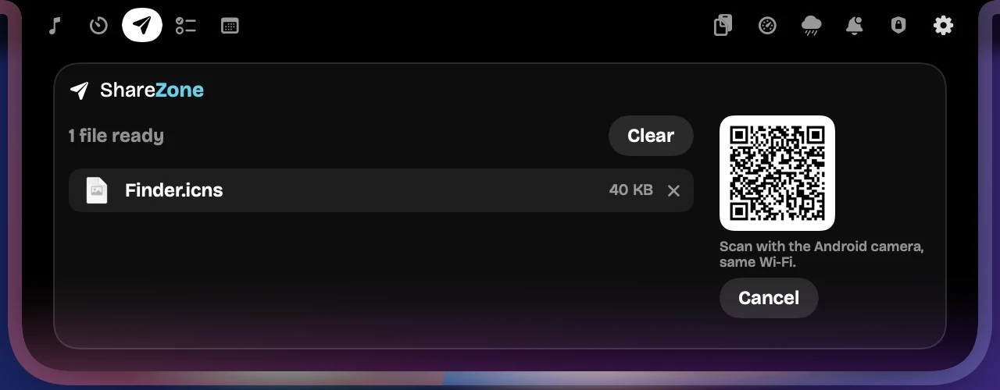
- Add files: drag them onto the notch (it opens ShareZone by itself), drop them in the ShareZone box, or click Choose files…. Remove one with ×, or all with Clear.
- Pick where they go (the two buttons on the right): - iPhone: on a Mac, AirDrop opens with your files. On Windows (no AirDrop), a code appears: scan it with the iPhone camera and tap each file in Safari to save it. - Android · Quick Share QR: a QR code appears. Scan it with the Android phone's camera; Quick Share opens on the phone and the send starts by itself. The code is tied to the phone that scans it, so no other phone nearby can receive your files.
- Accept on the phone. Both screens show the same 4-digit code. The notch shows the progress, then Sent to ….
Cancel is there at every step (while connecting, while waiting for the phone, and while sending). After a send, the same two buttons are ready for the next files.
Good to know:
- The phone and the computer must be on the same Wi-Fi.
- The iPhone address works only for those files, only with its secret code, and only for 10 minutes.
- Turn ShareZone on or off in Settings › Modules.
14. Text capture: copy text from the screen
Copy text from anything you can see: a picture, a video, a scanned PDF, a slide, an app that won't let you select.
- Press ⌥O on Mac (Option+O) or Alt+O on Windows.
- The screen dims. Drag a box over the text. Press Esc to cancel.
- The notch shows Reading text…, then Text copied · N words. Paste it anywhere (⌘V / Ctrl+V).
A QR code in the box gives its link (Link copied).
Settings › Productivity › Text capture: switch it on or off and change the shortcut. On Mac it needs Screen Recording. The text is read on your device by macOS or Windows; nothing is sent anywhere.
15. Screenshots: save any part of the screen
Save any part of the screen as a picture with one shortcut. Text capture and Screenshots use the same selector: Text capture copies the words, Screenshots saves the picture.
How to take one
- Press ⌥⇧S on a Mac (Option+Shift+S) or Alt+Shift+S on Windows.
- The screen dims and shows Drag over the area to save. Drag a box over what you want. Press Esc (or the shortcut again) to cancel.
- The notch says Screenshot saved with the file's name.
File names: each file is named after the app that was in front, then the date and time, for example Google Chrome - November 1, 2026 - 12.20 PM.png. (A file name can't contain ":", so the time uses a dot.) Two screenshots in the same minute get (2), (3) added.
Where they go: by default Pictures › Polaric Screenshots (Mac: ~/Pictures/Polaric Screenshots; Windows: Pictures\Polaric Screenshots).
Settings › Screenshots
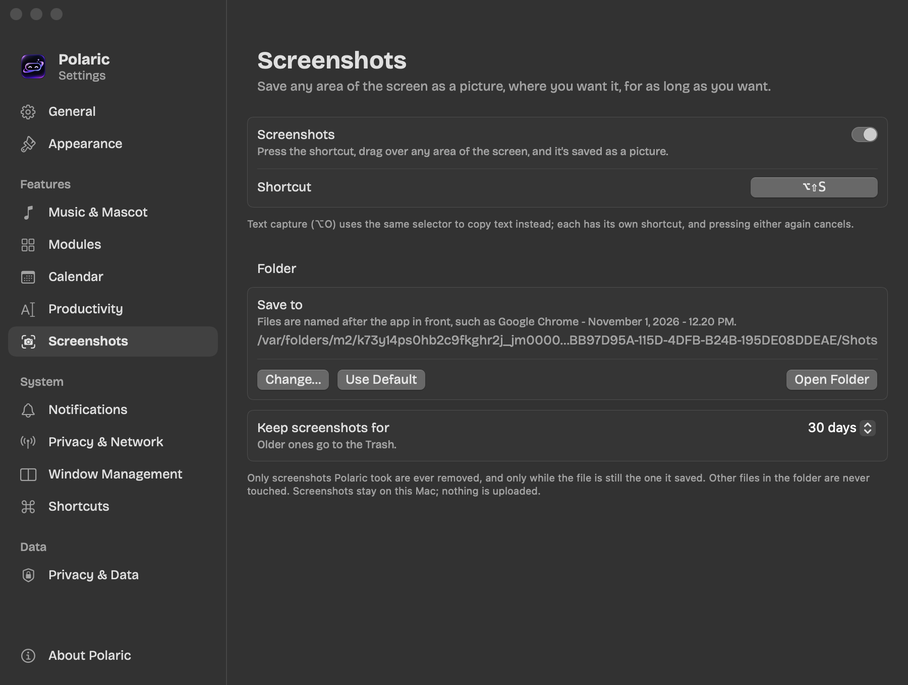
| Setting | What it does |
|---|---|
| Screenshots | Switches the feature and its shortcut on or off |
| Shortcut | Click it and press new keys. Polaric refuses a shortcut that macOS/Windows, Polaric itself or another app already uses, and offers a free one (Use … instead). For a shortcut most apps use (like ⌘⇧S Save As) it warns you. |
| Save to · Change… | Pick any folder you can write to. A folder that's missing or read-only is refused with the reason |
| Use Default | Back to Polaric Screenshots |
| Open Folder | Opens the folder in Finder or File Explorer |
| Keep screenshots for | 1 day, 7 days, 30 days (default), 90 days, 1 year or Forever. Older ones go to the Trash (Mac) or Recycle Bin (Windows), so you can still get them back |
Good to know:
- Clean-up only ever touches screenshots Polaric took itself, and only while the file is unchanged (same place, same size). Your other files in the folder are never touched, even if they have a similar name.
- If the chosen folder isn't available any more (an unplugged drive), the screenshot is saved in Polaric Screenshots and the notch says so.
- Windows' own Win+Shift+S keeps working as before.
- On Mac it needs Screen Recording and Accessibility (see 2.1). Screenshots stay on your device; nothing is uploaded.
16. Privacy & Network
One page in the notch shows which sensitive parts of your computer are really in use right now, and how fast your internet is. Open it from its tab (the shield) in the open notch.
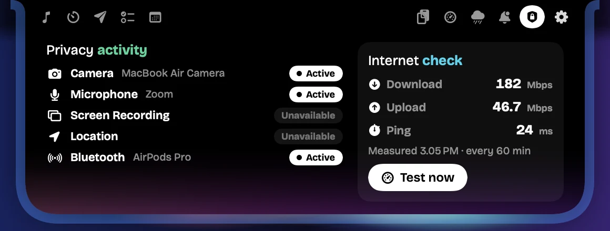
Privacy activity
| Row | Mac | Windows |
|---|---|---|
| Camera | Active when any camera is running; during a call, with the app's name once the call's own camera button says it's on | Active, with the app's name, while an app uses it |
| Microphone | Active, with the app's name, while an app records; Muted while the call's own mute button is on (Google Meet, Zoom, Teams) | Active, with the app's name; Muted while the call says it's muted |
| Screen Recording | Unavailable (macOS doesn't tell other apps) | Active when an app captures through Windows' capture feature |
| Location | Unavailable (macOS doesn't tell other apps) | Active, with the app's name |
| Bluetooth | Active, with the devices connected now | Active, with the devices connected now |
- Active means the system reports it in use right now, never just that an app is allowed to use it. Inactive means it stopped. Unavailable means the system gives no reliable signal, so Polaric doesn't guess.
- When something starts, the notch shows an alert such as Camera in use · MacBook Air Camera. When it stops, the alert changes to stopped. The same state never alerts twice.
- Polaric only asks whether each one is in use. It never records sound, pictures, keys, clipboard text or where you are.
Internet check
The right side shows Download and Upload (Mbps) and the average Ping (ms), with when they were measured.
- Test now measures right away.
- Polaric also checks by itself every 60 minutes (you set the minutes), and shows the result in the notch:
- It is an internet speed test, not the traffic on your own network connection. On a Mac, download and upload come from macOS's own test (Apple's servers); on Windows from speed.cloudflare.com. Ping is the average of 5 pings to speed.cloudflare.com.
- Each check moves some data (often 100 MB or more on a fast line). Scheduled checks skip metered connections such as a phone's hotspot; Test now always runs.
- A check that fails says so (for example Couldn't reach the test servers), and the last good result keeps its own time.
Settings › Privacy & Network
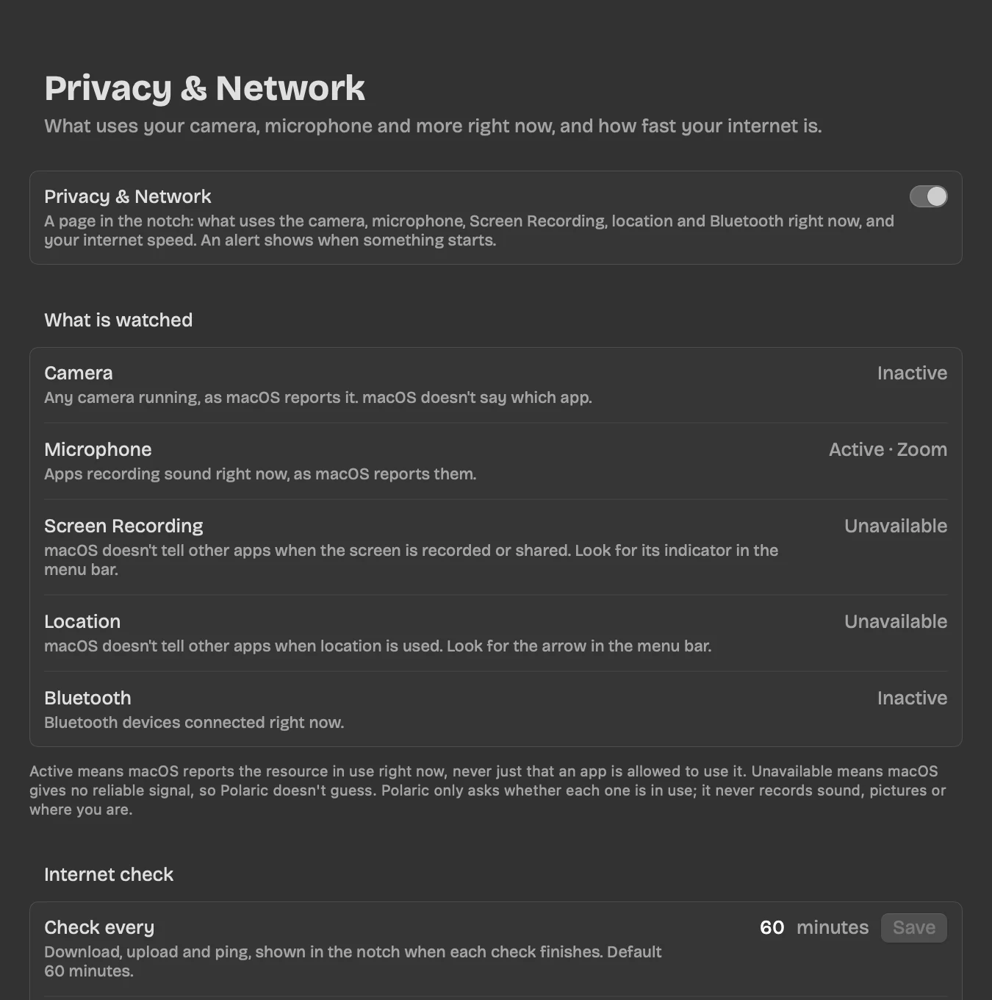
| Setting | What it does |
|---|---|
| Privacy & Network | Turns the page and its alerts on or off |
| What is watched | Each resource with its status now and what the system can and can't tell |
| Check every … minutes · Save | Type any whole number from 5 to 1440 (one day). The default is 60. A wrong value (0, a negative number, text) is refused with the reason, and the old interval stays |
| Latest result · Test now | The last measurement, and a button to measure now |
17. Game Awareness (Windows)
Start a game and the notch shows its name and its real frames per second, with your mascot cheering you on:
Hades II • FPS 144 [mascot]
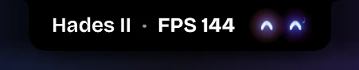
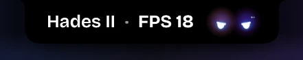
- Which games: games from Steam, Epic, GOG, Xbox, Riot, Battle.net, EA and Ubisoft, and any game Windows itself lists as a game. In a window, borderless or full screen. Polaric follows the game until it exits, then everything about it stops.
- The FPS is read from the frames the game hands to Windows (the same events the PresentMon tool reads), updated every second. Nothing is added to the game, so anti-cheat isn't touched. It is never your screen's refresh rate.
- The mascot's face follows a few seconds' average, so a short dip doesn't make it flicker.
| FPS (default) | Face |
|---|---|
| 120 and up | Excited |
| 90–119 | Happy |
| 60–89 | Normal |
| 40–59 | Concerned |
| 25–39 | Worried |
| below 25 | Sad |
- While a game runs, the idle clock steps aside. A notification still comes through, then the notch goes back to the game and its FPS.
- FPS -- means the FPS can't be read yet: Windows needs permission (below), or the game draws in a way Windows doesn't report (some Vulkan or OpenGL games).
Settings › Gaming & Meetings
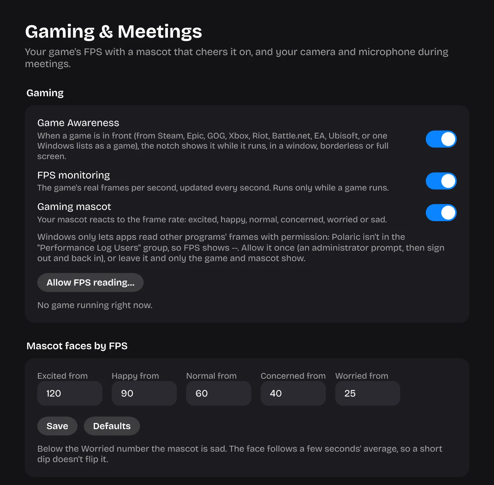
| Setting | What it does |
|---|---|
| Game Awareness | Shows a running game in the notch (on by default) |
| FPS monitoring | Reads the game's real FPS (on by default; runs only while a game runs) |
| Gaming mascot | The mascot reacts to the frame rate |
| Allow FPS reading… | Shown when Windows hasn't given permission yet. Click it, accept the administrator prompt (it adds you to Windows' Performance Log Users group), then sign out and back in |
| Mascot faces by FPS | The FPS where each face starts. Each number must be lower than the one before (for example 120, 90, 60, 40, 25). Save keeps them; Defaults puts the original numbers back |
| Not games | Programs that should never count as games, by file name (e.g. game.exe, other.exe) |
Note: a game in exclusive full screen draws over every window, the notch included. Borderless full screen works.
18. Meeting Awareness
During a call, the notch shows whether your camera and microphone are live, on a Mac beside the camera (Mic ON [notch] Cam OFF) and on Windows in one line:
[camera] Cam ON • [microphone] Mic ON
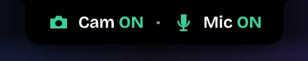
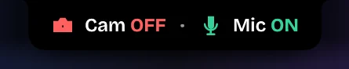
- Green means on, red means off, grey UNKNOWN means Windows doesn't say. Each one animates only when it changes: the camera opens or closes, the microphone pulses or gets a slash.
- Which calls: Zoom, Microsoft Teams, Webex, Slack, Discord, Skype, and Google Meet (or Zoom, Teams, Webex, Whereby, Jitsi) in a browser. A call counts only while the app really uses the camera or the microphone; an open Zoom window alone is not a meeting.
- The meeting comes first: it shows over a game and over the idle clock. A notification still comes through, then Cam and Mic come back. When the call ends, the notch goes back to what it showed before.
- A call counts while the camera or microphone is really in use (macOS's own device state, Windows' privacy record). Mute and camera come from the call's own buttons (Google Meet, Zoom, Microsoft Teams), so a muted microphone reads OFF even though the app keeps it open.
- Only two alerts: Meeting started and Meeting ended. The live Cam and Mic line shows in between.
Settings › Privacy & Network (Mac) or Settings › Gaming & Meetings › Meetings (Windows), on by default:
| Setting | What it does |
|---|---|
| Meeting Awareness | Watches for calls (nothing is watched while it's off) |
| Camera | Shows Cam ON / OFF |
| Microphone | Shows Mic ON / OFF |
19. Idle clock (Windows)
When nothing else is going on, the notch stays as a small clock with your mascot beside it, instead of folding to the glowing strip.
- It follows your PC's time and time zone.
- The mascot blinks now and then and dozes off when you're away. It steps aside when you point at the notch (which opens it) or at a browser's tabs (where the notch folds as usual).
- What comes first: a meeting, then a game, then a browser's tabs under the pointer, then music or a timer, then the idle clock. In full screen the notch hides.
Settings › Appearance › Idle clock
| Setting | What it does |
|---|---|
| Idle clock | The clock when nothing else shows (on by default) |
| Clock format | 12-hour (12:20 PM, default) or 24-hour (12:20) |
| Mascot beside the clock | Show or hide the mascot |
| Idle Aura | A soft glow in your theme's colours around the clock (off by default) |
20. Your look: themes, Aura Glow and mascots
Make Polaric yours in Settings › Appearance and Settings › Music & Mascot.
Aura Glow: a living light around the notch while music plays. Pick one of 20 colours (many-colour blends such as Prism, Aurora or Tropical, two-colour pairs, or a single colour), and set its speed and brightness.
Mascots: 35 characters live beside the camera. Hopper is shown here; Foxy, Ribbit, Luna, Draco, Bao, Gem, Frost and many more are one click away.
Themes: 40 themes, from bright (Ocean, Aurora, Sunset, Emerald) to luxe (Gold, Sapphire, Noir). A theme colours the mascot's eyes, the timer ring, progress bars and the soft light in the corners of the open notch and its alerts.
The mascot also:
- Dances while music plays (intensity, tempo, movement, a jump when the song changes).
- Reacts: happy when a task is done, worried at low battery, surprised near an AI limit, and on Windows to your game's FPS.
- Rests when you're away, waves when you come back, and dozes off after a while.
21. Browser-Aware Mode and Adaptive Notch
Browser-Aware Mode (Mac and Windows): when the pointer is on a browser's tabs right under the notch, Polaric folds into a thin glowing strip so your tabs stay reachable. Touch the strip to bring it back. While you head for the tabs, everything folds (lyrics, alerts, notifications, a meeting's Cam/Mic line) and comes back once the pointer leaves them.
Adaptive Notch (Windows): the notch expands for music, timers, notifications, games and meetings. When nothing is happening it shows the idle clock, or folds into the strip if you turned the idle clock off. To keep it open, use the tray icon's Keep notch expanded.
22. Settings, backup, privacy and About
Settings is a sidebar in groups: General and Appearance; Notch (Modules, Music & Mascot, Notifications, Gaming & Meetings on Windows); Tools (Calendar, AutoText, Screenshots, Window Management, Shortcuts); Privacy (Privacy & Network, Privacy & Data); and About. Every section has an ⓘ with what it does, why to use it and how to set it, and Settings speaks English or Bahasa Indonesia (see Language and help in Settings).
Shortcuts: every shortcut is checked when you change it. One that macOS/Windows, Polaric or another app already uses is refused, with a free one offered (Use … instead).
About shows your version and:
- User guide: this guide, in English or Bahasa Indonesia.
- What's new: opens a window with what's New, what's Improved and what was Fixed in your version.
- Polaric Disclaimer: what Polaric keeps, every internet connection it makes and why, and why to download Polaric only from polaricdev.github.io.
- A Support Our Development button, and the address for feedback, ideas and bug reports: polaric.dev@gmail.com.
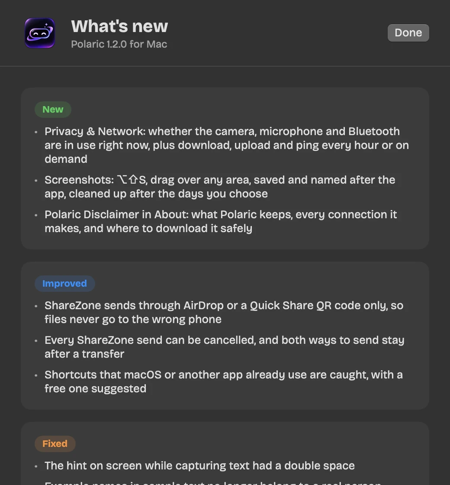
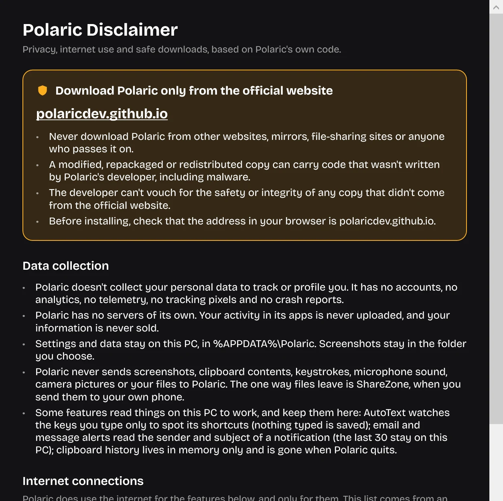
Privacy & Data:
- Export backup…: one sealed
.polaricfile with every setting, templates and variables, to-dos, meetings and calendar links. It restores on both Mac and Windows. (The screenshot folder stays with each computer.) - Restore from backup…: checked completely first; if anything goes wrong your current setup is put back.
- Reset settings to default: settings only; your data stays.
- Delete saved Polaric data: templates, to-dos, meetings, calendar links, notification history, clipboard history and the list of screenshots Polaric took (the pictures themselves stay in their folder). Settings stay.
Everything stays on your device. No analytics, no tracking, no accounts. The Polaric Disclaimer lists every connection Polaric makes: update checks, lyrics, the internet check, your calendar links, AI usage (if you turn it on) and ShareZone.
23. Polaric for Windows
Everything above works the same on Windows, plus Game Awareness, Meeting Awareness and the idle clock. The notch sits at the top center of the screen.
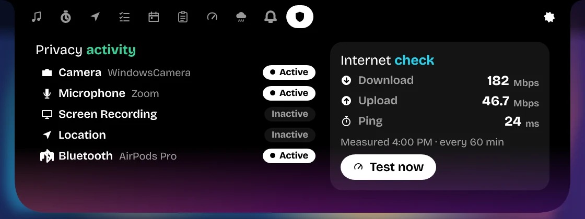
Windows notes:
- Shortcuts: Ctrl+Alt+N (open), Ctrl+Alt+V (clipboard), Ctrl+Alt+S (snap), Alt+O (text capture), Alt+Shift+S (screenshot).
- ShareZone: iPhone and Android both use a QR code.
- The tray icon has Settings, About, Keep notch expanded and Quit.
- Email and chat notifications come from Windows' own notification list, so they work even with Do not disturb on. Chrome must be allowed to show notifications.
24. AI task alerts
Start a long task in an AI tool, go do something else, and the notch tells you the moment it's done:
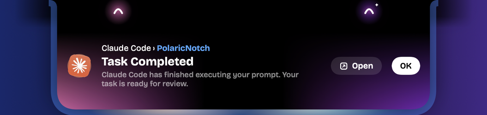
[animated logo] Claude Code › PolaricNotch · Task Completed · Claude Code has finished executing your prompt. Your task is ready for review.
- Open brings back the terminal, editor or app it ran in; OK closes the alert.
- A task that ends with an error says Task Stopped.
- The name always says where it came from: Claude Code in a terminal or editor, Claude AI on claude.ai or in the Claude app.
| AI | How Polaric knows |
|---|---|
| Claude Code | Its own Stop hook (press Connect once) |
| Codex | Its own notify setting (press Connect once) |
| Antigravity (app, IDE and CLI) | Its own Stop hook, one for all three; the alert says Antigravity, Antigravity IDE or Antigravity CLI |
| Claude AI, ChatGPT, Gemini | The notification they post in Chrome or in their app (allow their notifications once) |
Settings › Notifications › AI tasks
| Setting | What it does |
|---|---|
| When an AI finishes a task | The alert itself (on by default) |
| Also while you're looking at it | Off: no alert while the window the task ran in is in front, since you're already looking at it |
| Connect / Disconnect | Beside Claude Code, Codex and Antigravity. Connect adds one entry to that tool's own settings file (~/.claude/settings.json, ~/.codex/config.toml, ~/.gemini/config/hooks.json), keeps a backup next to it (.polaric-backup) and changes nothing else. Disconnect takes the entry out again |
- If Codex already runs something of yours when a turn ends, Polaric leaves it alone and tells you.
- Behind a meeting or timer alert, a finished task waits its turn. The same task reported twice shows once.
- Polaric only learns that a task finished, and the project folder's name (or the chat's title). Never your prompt or the answer.
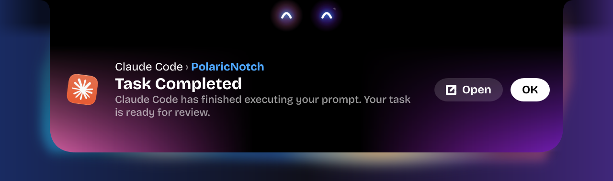
25. Language and help in Settings
Language: Settings › General › Language: English or Bahasa Indonesia. It changes at once, everywhere: Settings, the notch, alerts and the tray menu on Windows. Your own things stay as they are: songs, lyrics, who wrote, email subjects, to-dos and templates.
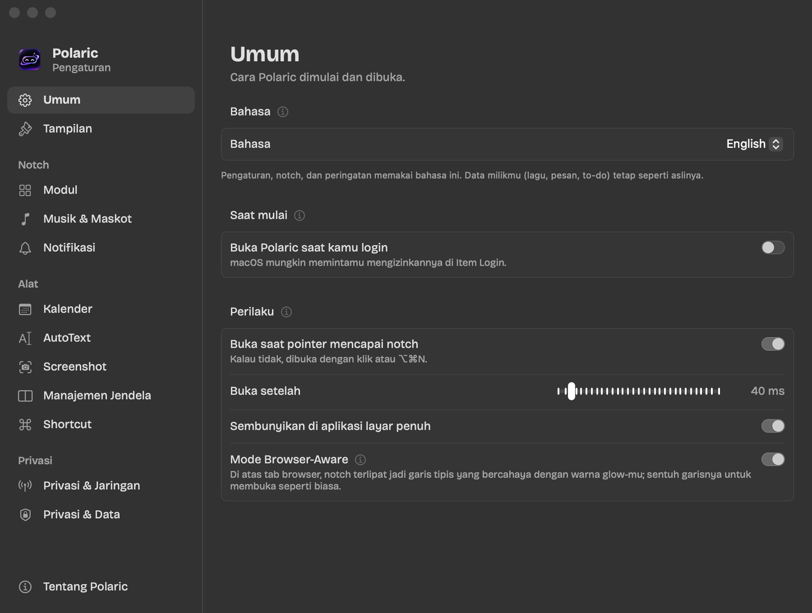
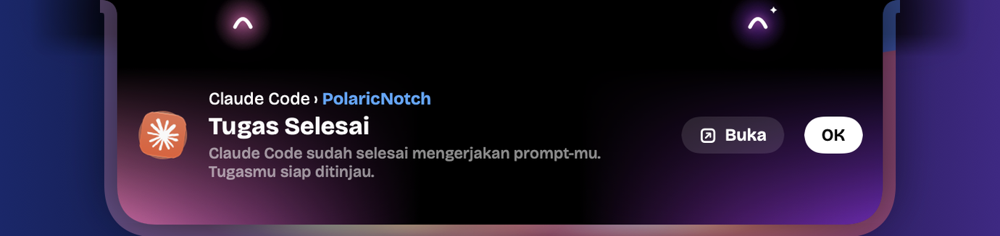
ⓘ beside every section: click it for What it does, Why use it and How to set it, in your language.
User guide: About › User guide opens this guide in English or Bahasa Indonesia.
26. Troubleshooting
| Problem | Fix |
|---|---|
| AutoText, Window Snap or notifications do nothing (Mac) | System Settings › Privacy & Security › Accessibility: remove Polaric (−), open Polaric again, switch it on |
| No alert when Claude Code, Codex or Antigravity finishes | Settings › Notifications › AI tasks: press Connect beside it, then start a new session of the tool. Nothing shows while you're looking at its window unless Also while you're looking at it is on |
| No alert from Claude AI, ChatGPT or Gemini | Allow the site's notifications in Chrome (and its own setting to notify when a reply is ready), or the app's notifications |
| Codex: already runs something when a turn ends | Polaric leaves your own notify alone; remove that line from ~/.codex/config.toml first if you want Polaric's |
| No email or chat notification | Allow notifications for Chrome / the app; check Settings › Notifications › Email and chats; the Notifications module must be on (Settings › Modules) |
| Calendar link refused | It must be a public https address (Google's Public address in iCal format) |
| A shortcut fires inside a word | Use a prefix such as . (e.g. .daily) |
| Windows says "Windows protected your PC" | More info › Run anyway (the app is signed with a self-signed certificate) |
| ⌥O or ⌥⇧S does nothing (Mac) | Accessibility and Screen Recording must both be on for Polaric; after a reinstall switch them off and on again |
| A shortcut is refused in Settings | macOS/Windows, Polaric or another app already uses it: press Use … instead, or pick other keys |
| "Folder unavailable · saved in Polaric Screenshots" | The folder you picked is missing or read-only (an unplugged drive). Plug it back in, or pick another folder in Settings › Screenshots |
| Old screenshots weren't cleaned up | Only screenshots Polaric took and that are unchanged are removed; files you moved, renamed or edited are left alone |
| Text capture says "No text found" | Drag a bigger box around the words; very small or blurry text may not read |
| Privacy & Network shows Unavailable | The system gives no reliable signal for that one (on a Mac: Screen Recording and Location). Look for the indicator in the menu bar |
| The internet check says Skipped: metered connection | You're on a hotspot or a metered line; press Test now to measure anyway |
| The game shows FPS -- (Windows) | Settings › Gaming & Meetings › Allow FPS reading…, then sign out and back in. Some Vulkan/OpenGL games can't be measured |
| My game isn't detected (Windows) | Install it through a store (Steam, Epic…) or open it once with Windows' Game Bar; check it isn't in Not games |
| No Cam/Mic during a call | Check Meeting Awareness, Camera and Microphone (Mac: Settings › Privacy & Network; Windows: Settings › Gaming & Meetings) |
| My Android phone doesn't get the files | Same Wi-Fi; Quick Share on; scan the code with the phone's camera and keep the phone unlocked until Sent to … |
| The iPhone can't open the code's page | Same Wi-Fi as the computer; on Windows allow Polaric on private networks when the firewall asks |
27. What's new in 1.3.0
New
- AI task alerts (Mac and Windows): Claude Code › your project · Task Completed with the AI's animated logo, for Claude Code, Codex, Antigravity (app, IDE, CLI), Claude AI, ChatGPT and Gemini.
- Bahasa Indonesia for all of Polaric, chosen in Settings › General › Language.
- ⓘ help beside every Settings section, and Settings grouped into Notch, Tools and Privacy.
- Meeting Awareness on the Mac, with Meeting started / Meeting ended alerts on both.
- User guide links in About.
Improved
- The microphone shows Muted while a call has it muted, read from Google Meet's, Zoom's and Teams' own buttons; the camera row names the app during a call.
- Browser-Aware folds everything (lyrics, alerts, notifications) while you head for a browser's tabs.
- The notch never cuts text off: it widens for the whole line, also when a message count or the timer changes.
- WhatsApp senders saved as a phone number show as WhatsApp shows them.
Fixed
- No thin outline around the resting notch.
- Windows: every Settings description is translated; a long backup line wraps inside its card.
In 1.2.0
New
- Screenshots (Mac and Windows): ⌥⇧S / Alt+Shift+S, drag over any area, saved and named after the app, in the folder you choose, cleaned up after the days you pick.
- Privacy & Network (Mac and Windows): what really uses your camera, microphone, screen capture, location and Bluetooth right now, plus download, upload and ping every hour or on demand.
- Game Awareness (Windows): your game's real FPS in the notch, with a mascot that reacts to it.
- Meeting Awareness (Windows): Cam ON / Mic ON in green and red during calls (off until you turn it on).
- Idle clock (Windows): a small clock with your mascot when nothing's going on, with an optional Idle Aura.
- Polaric Disclaimer and What's new in About.
Improved
- Your settings and AutoText are safe on every update: everything you set is kept exactly, new features start with their defaults, and a file Polaric can't read is copied aside (
….unreadable-<date>), never replaced or reset. Tested with real data from 1.1.2. - ShareZone sends only through AirDrop or a QR code, so files never go to the wrong phone, and every send can be cancelled.
- Shortcuts that the system or another app already uses are caught, with a free one suggested.
Also since 1.1.0
- Polaric updates itself (1.1.1).
- Windows: the notch hides over browser tabs again; notifications and the playing song read in one line (1.1.2).
Polaric 1.3.0 · Crafted by polaric.dev@gmail.com · Download only from polaricdev.github.io